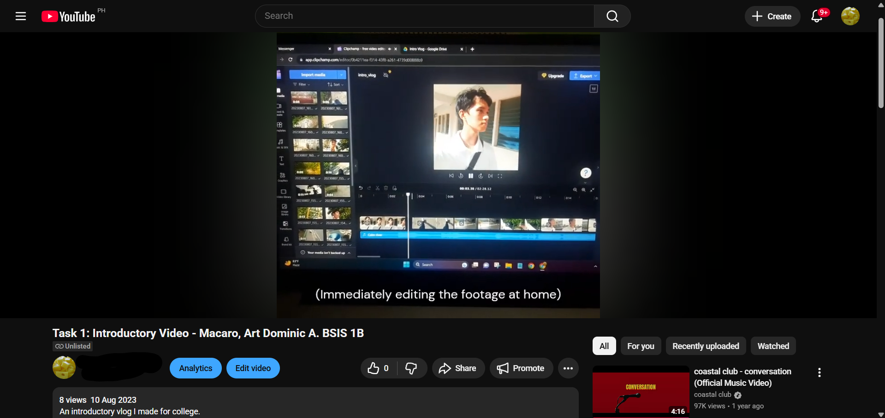
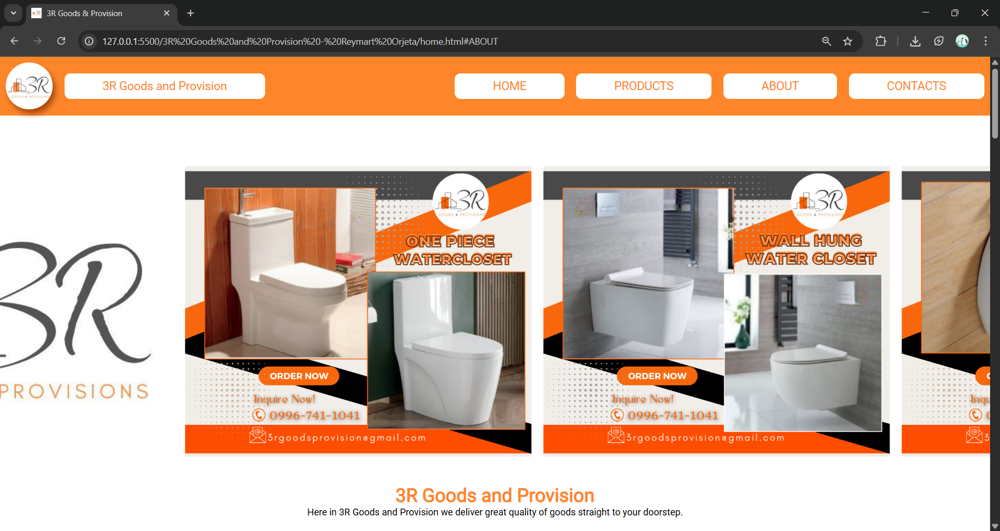
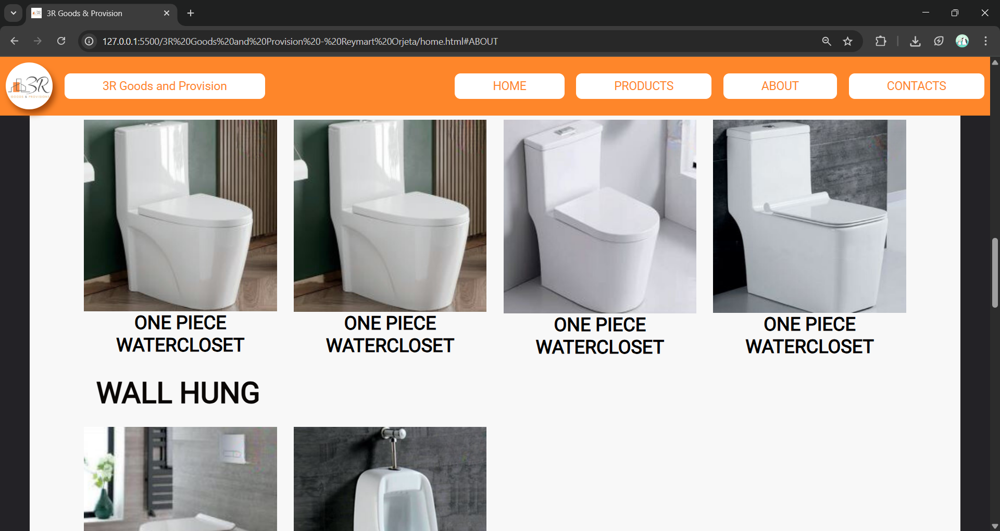
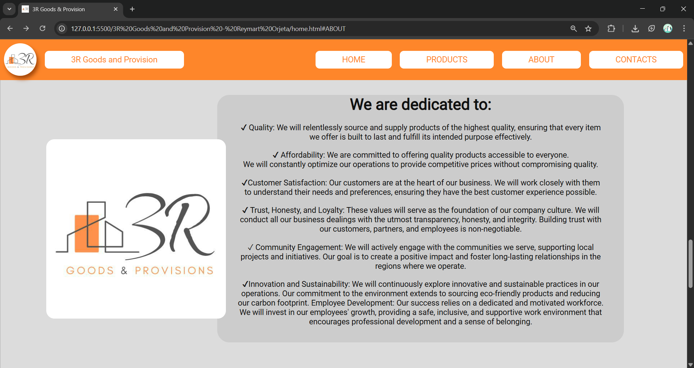
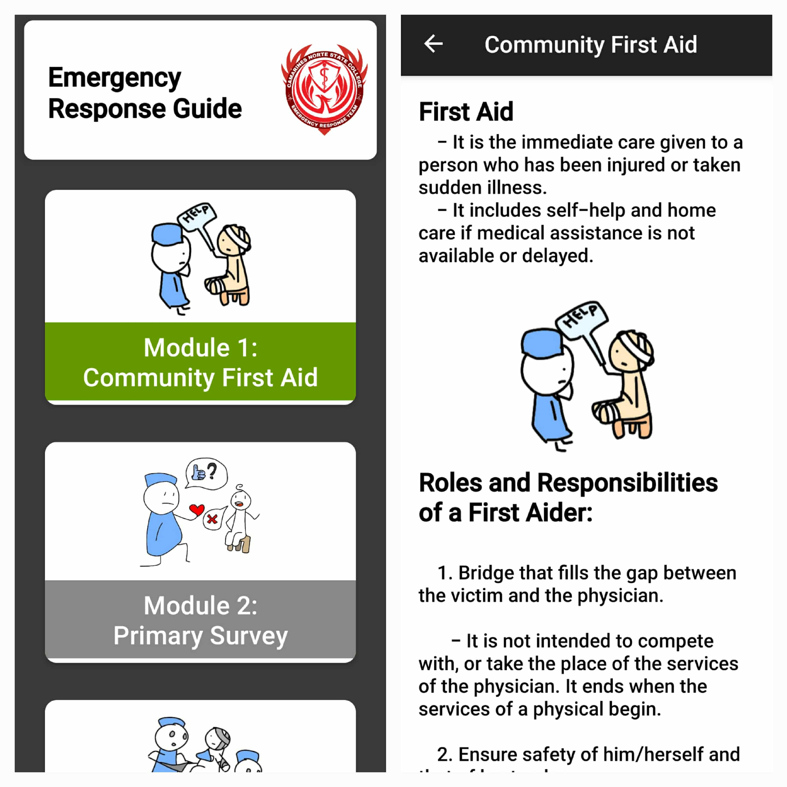
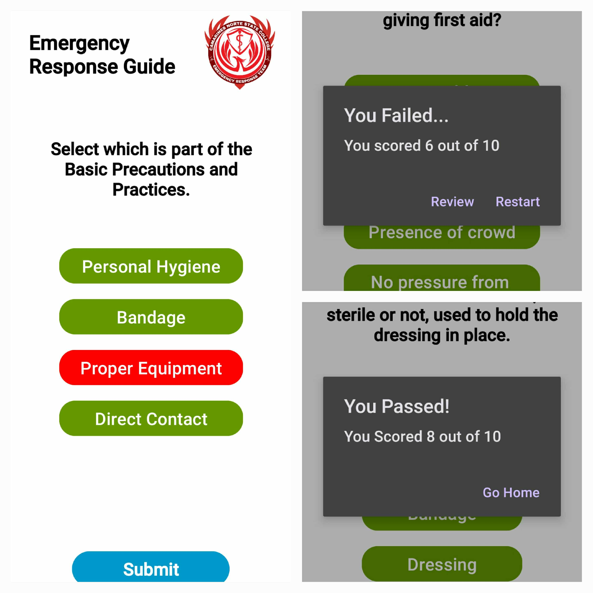

-
August 2023 / First Video

- It all started during the first year of the first day of college. A small but innocent project
to introduce one's self and allowed that self to demonstrate their ability to record and edit
a video.
- It was the first time he had ever touched a video editor, he wasn't familiar with video
editors,
he wasn't aware there were better video editors to use. He thought there was a built-in editor in
his laptop like it did in his phone... There wasn't. He just so happened to stumble upon Clipchamp
in the Microsoft store, so he settled for that, he guessed.
- The process for him was addicting. He could manipulate every second, every moment. The mood, the
sound, the color --everything! In his spare time, he used to watch online skits, movies, and other
sorts of live media, so there was a bountiful amount of inspiration to be found.
- He spent hours thinking of each scene and how it would all connect. The story was lacking if not
absent at all, but the process of recording, splicing, and connecting it with text effects and
copyright-free audio was quite enjoyable. It wasn't just an assignment anymore. It was his first
step into something he didn't yet realize he would come to love.
-
November 2023 - January 2024 / 3RGP Website



- Then arrived November. Groups must be formed to collaborate and form a proposal to create a
website
to a chosen client. Creating and programming the website itself is in itself simple. The hard part
was finding a client to make a proposal for.
- Like a mitosis, we divided ourselves into 4 roles:
1. Back-end developer
2. Front-end developer
3. Paperworks
4. Client Middleman
- The Back-end focuses on the logic and the advanced functions and features of the website while the
Front-end
focuses on making the website both appealing and visually coherent enough to mesh well with the
back-end.
- The Paperworks role is dedicated to creating the proposal for the future client. But since there
was no client to be found at the time, this role was put on standby at the early stages of
development.
- The Client Middleman initially looks for the client and becomes in contact with them
throughout the development, inquiring about the details needed to encode for the proposal, and what
and what not to include in the website.
-
September - October 2024 / App development


- Just like the website, the app project required a client to make an app to. After being rejected a
couple times, the group settled on making an app for the First Aid Responders.
- The main core of the app is creating a guide that provides the user with modules full of general
but useful pointers and guides when reacting to an emergency whether you are a certified first aid
responder or not.
- Creating the UI and UX was fun, but the back-end really burdens the back, especially during the
late nights of watching tutorials as the app is being made.